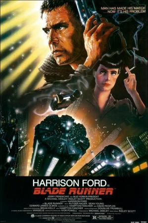

Blade Runner

8,1 🌟
En un futuro distópico, Rick Deckard es un "blade runner" cuya misión es localizar y retirar a cuatro replicantes que han escapado a la Tierra. La película explora temas profundos sobre la esencia de lo que significa ser humano y la moralidad de la creación artificial.
Audio-Reseña
Transcripción:
Análisis sobre la estética ciberpunk de la película y los dilemas éticos que presenta la inteligencia artificial en el cine de los años 80, destacando su impacto visual y filosófico.